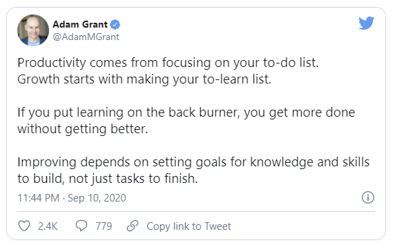

You are surely familiar with the term To-do list. What is it exactly?
It is nothing but an index of tasks to be finished on the following day, organized in order of priority. A planner is more or less the same thing.
Both are two sides of the same coin.
Working remotely recommends you to keep track of how you spend every hour of your day. Self-tracking lets you understand when you are more productive and also, where you are wasting your precious time.
Creating a to-do list would allow you to keep track of your progress efficiently. You can then choose to do the more critical tasks in your precise productive hours.
You can design the list as per your preference. The critical task is to be treated as the highest priority and should be worked on, at the earliest.
And designate the highest amount of time to the most difficult one.
While you construct your list, think about long-term goals- finishing a big project, as well as short-term goals- the tasks which lead to that big goal. As you are completing one goal after another, check them off the list indicating that you are making progress.
This keeps your focus intact, thereby improving your knowledge and makes the work seem doable. And you look forward to accomplishing the rest of the duties.
Similarly, a planner or a calendar is an accountability tool - to keep track of meetings, deadlines and appointments. This way, you do not have to devote headspace to constantly remembering your office chores.
All this information would be in the record of a planner. It reminds you about which task is to be delivered on which date and schedule of your meetings & appointments.
The planner can also take your availability into account. It should include your other commitments too so that you are able to work accordingly and your colleagues & family members know when you are available for their work.
Be it work or non-work activities, a to-do list and a planner are essential for positive reinforcement.
Remote work demands you to hold yourself accountable for every minute piece of work you are assigned and prioritizing & scheduling your work can give you the best results.